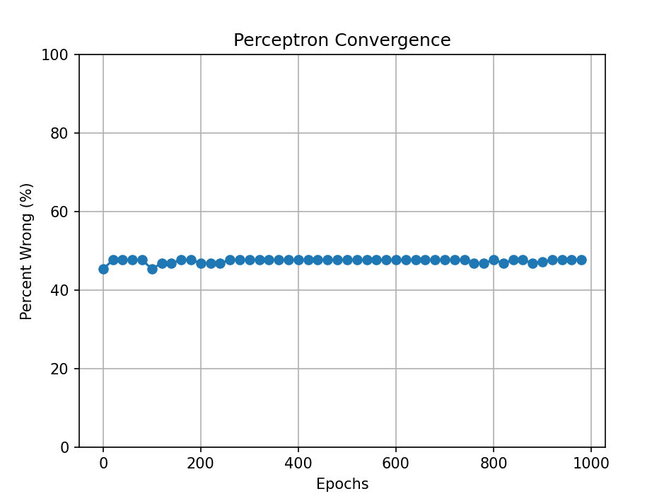
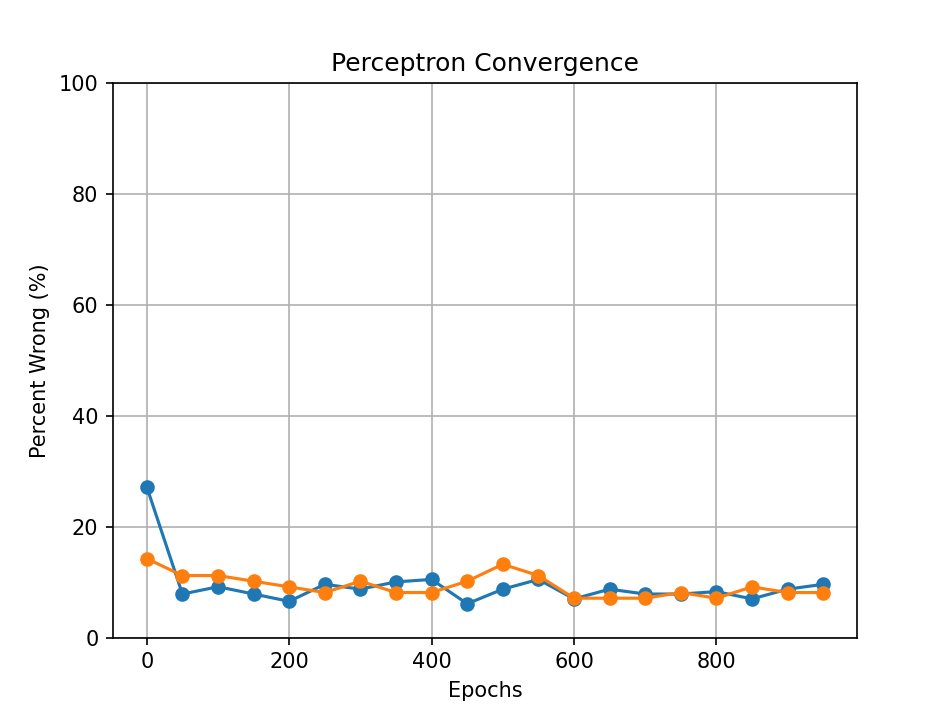

The Perceptron

The Perceptron is a machine learning algorithm that belongs to the category of linear
classifiers. It processes data, which can be multi-dimensional, and identifies patterns during training to
categorize the data into two binary classes, labeled as either -1 or 1. The algorithm takes a set of numerical
inputs, multiplies each by a weight called theta, and sums them along with a bias term to produce a binary
output. Our program uses this algorithm to determine whether a city is coastal (1) or inland (-1), and it is
trained on hundreds of cities to find a correlation.
Linear Regression Correlation

How does the perceptron classify the city? It uses the OpenMeteo API (Open-Meteo, licensed under CC BY 4.0). We extract weather
features for the city and feed them into the perceptron model, which is trained on 300+ cities with all 42
features each. This graph shows estimated correlations between the OpenMeteo features and the label[(coastal (1)
or inland (-1)]. These “correlations” are the R^2 scores of linear regressions fitted to all data points.
Polynomial Feature Correlations

The above graph is an example of “polynomial feature expansion.” Instead of providing the
perceptron with just a feature [x], we give it exponentiated features [x, x^2, x^3, x^n] that effectively
allow it to fit a polynomial. As shown in the graph, the r^2 scores for the polynomial regressions are
significantly higher than those for the linear regressions, demonstrating that using this feature expansion
makes the model more accurate.
Perceptron Convergence

Non-Normalized

Normalized and Polynomial Regression

Train vs Test Convergence
This graph tracks the performance of the training model as it iterates over Tau runs
(commonly referred to as epochs). As the perceptron changes its weights, epoch by epoch, the model’s error (% of
incorrectly predicted labels) decreases. You can see that the model struggles to improve after reaching a
certain loss (in this case, a loss of 11.53%).